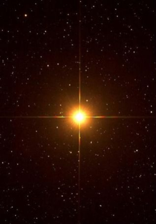
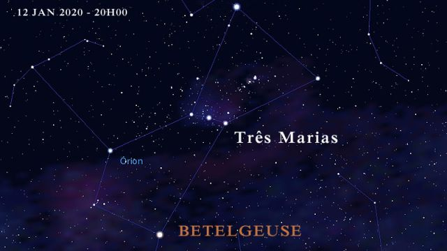

Betelgeuse

Betelgeuse é uma estrela muito grande, luminosa e fria classificada como uma supergigante vermelha de tipo espectral M1-2 Ia-ab. A letra "M" indica que ela é uma estrela vermelha pertencendo à classe espectral M, tendo portanto uma temperatura superficial baixa; o sufixo "Ia-ab" é a classe de luminosidade da estrela e indica que ela é intermediária entre uma supergigante de luminosidade normal e uma supergigante de alta luminosidade
Supergigantes vermelhas como Betelgeuse são estrelas massivas que já saíram da sequência principal e estão nas últimas etapas de sua evolução. Essas estrelas consomem seu combustível rapidamente e vivem por apenas alguns milhões de anos. Originalmente uma estrela de classe O da sequência principal, Betelgeuse já consumiu todo o hidrogênio em seu núcleo, resultando na contração do núcleo pela força da gravidade. Para balancear o núcleo mais quente e denso, as camadas externas da estrelas expandiram e esfriaram.

Alpha Orionis (Orionis), conhecida como Betelgeuse, é uma estrela de brilho variável sendo a 10ª ou 12ª estrela mais brilhante das que podem ser vistas da Terra. É também a segunda estrela mais brilhante na constelação de Orion.
A estrela é massiva o suficiente para eventualmente começar a fusão de elementos mais pesados, passando por etapas de fusão de carbono, neônio, oxigênio e silício, até a formação de um núcleo de ferro, que vai sofrer colapso gerando uma supernova de tipo.
.
Desenvolvedoras:
MARIA LUIZA GONÇALVES PEREIRA
NICOLY RILLARY BRITO DA SILVA